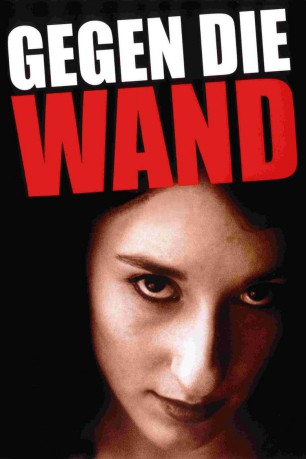

#5705 Gegen die Wand
 gesehen am 14.03.2017
gesehen am 14.03.2017
 
 IMDB-Wertung: 8.0 / 10
IMDB-Wertung: 8.0 / 10  Metascore: 0
Metascore: 0 
Zwei Verzweifelte treffen in einem Hamburger Krankenhaus aufeinander. Die junge Türkin Sibel hat sich die Pulsadern aufgeschnitten, Cahit sein Auto total betrunken gegen die Wand gefahren. Um ihrem restriktiven Elternhaus zu entfliehen, überredet Sibel Cahit, sie zum Schein zu heiraten, im Gegenzug will sie ihm den Haushalt führen. Immer mehr fühlt sich der Alkoholiker jedoch zu Sibel hingezogen, während sie sich ungehemmt dem Vergnügen hingibt. Da tötet Cahit im Rausch einen ihrer Liebhaber.
Jahr: 2004
Dauer: 121 Minuten
FSK: 12
Land: Deutschland Studio: Timebandits FilmsTonspuren:
Untertitel: Deutsch,
Auflösung: 1080p (1920x1040) Größe: 10076 MB
Genre: Drama, Liebe
Regisseur: Fatih Akin
Drehbuch: Doris Dörrie
Soundtrack:
Darsteller:
 Birol Ünel als Cahit
Birol Ünel als Cahit- Güven Kiraç als Seref
- Sibel Kekilli als Sibel
 Ralph Misske als Patient 1, Psychiatrie
Ralph Misske als Patient 1, Psychiatrie Philipp Baltus als Patient 2, Psychiatrie
Philipp Baltus als Patient 2, Psychiatrie- Orhan Güner als Busfahrer
- Meltem Cumbul als Selma, Cousine
 Mehmet Kurtulus als Barmann Istanbul
Mehmet Kurtulus als Barmann Istanbul Tim Seyfi als Bayerischer Taxifahrer
Tim Seyfi als Bayerischer Taxifahrer- Maceo Parker als Musiker
- Zarah Jane McKenzie als Barfrau in der Fabrik
- Stefan Gebelhoff als Nico
- Catrin Striebeck als Maren
- Francesco Fiannaca als Mann am Tresen
- Mona Mur als Stammkundin Zoe Bar
- Hermann Lause als Dr. Schiller
- Karin Niwiger als Kassiererin, Psychiatrie
- Demir Gökgöl als Yunus Güner, Vater
- Cem Akin als Yilmaz Güner, Bruder
- Aysel Iscan als Birsen Güner, Mutter
- Herr Tekin als Barbier
- Andreas Thiel als Beamter Trauung
 Adam Bousdoukos als Barmann, Hochzeitsnacht
Adam Bousdoukos als Barmann, Hochzeitsnacht- Monique Akin als Kundin im Friseurladen
- Marco Greiser als Abschlepper Disco
- Senol Ugurlu als Shane
- Sileyman Kaplan als Sly
- Hatun Kazci als Hatice
- Canan Ata als Canan
- Nurcan Esmertürk als Nurcan
- Yilmaz Canan als Türsteher 1
- Alma Ouglu Sahin als Türsteher 2
- Cahit Aygüler als Schläger
- Reinhold Schulz als Haftanstaltswärter
- Feridun Koc als Osman 1
- Tulga Serim als Osman 2
- Tugay Erverdi als Osman 3
- Selim Erdogan als Taxifahrer
- Misra Tomruk als Pamuk, Tochter
- Selim Sesler als Musiker
- Idil Üner als Musiker
- Aytun Ede als Musiker
Datei: X:\2004(G-M)\Gegen die Wand (2004, FSK12, 1920x1040).mkv seit 13.03.2017
Festplatte: HD 2003-2004-2005(A-F)
 Es gibt insgesamt 41 Filme in der Gruppe '2004(G-M)'
Es gibt insgesamt 41 Filme in der Gruppe '2004(G-M)'